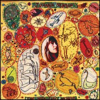

On harping: Joanna Newsom
The Milk-Eyed Mender
(Drag City, 2004)
Joanna Newsom
I haven’t heard the harp much on ZM lately. However, this unlikely stringed instrument, which we usually reserve for heavenly scenes, has found a home in the hands of Joanna Newsom.
Joanna, exercising the harp techniques learned since the age of seven, has developed a style distinct from that of most classically trained harpists. She sometimes refers to herself as a “harper” rather than a harpist, reflecting her refinement of a more artisanal – though no less masterly – approach to her craft.
After letting her love for songwriting overtake her initial plans to be a composer, she recorded and self-released two EPs: Walnut Whales and Yarn and Glue, before signing to Drag City Records. Her debut album, The Milk-Eyed Mender, was released in 2004 and features several revisited versions of songs previously found on her EPs.
Her music melds elements of indie pop with Appalachian and bluegrass traditions, inviting association with the new folk revival evinced in the music of Devendra Banhart and Sufjan Stevens, among others. But her idiosyncratic voice is a sticking point for many. Frequently described as being child-like or weathered, it can bring forth tears of joy or of sorrow.
The Milk-Eyed Mender is a sparsely arranged production, fashioned around the harp, with occasional appearances of a Wurlitzer organ, harpsichord, piano and Noah Georgeson on a slide-guitar for two tracks. The album is intimate, as if Joanna was singing gently to her listener in a quiet room. In an interview, she revealed that her lyrical content is often “biographical – it’s not necessarily literal, but it’s not made up, it’s not from a fairytale, it’s from my life.” Joanna is the best kind of storyteller, imaginative and full of sensitivity and wonder, invoking tales of ships sailing to Cair Paravel, sleepless nights and mortality, while singing about grammar, molluscs, owls, burning boats, collections of string, balloons, cake and kin. The embroidery of The Milk-Eyed Mender’s cover art befits its vivid and home-grown narrative.
Her lyrics show her love of words – their rhythms, their sounds, their spelling. She revels in such rhymes as “spurn/taciturn,” “disaster/poetaster” and “slow/embarcadero.” Alliteration is another favourite tool; “Peach, Plum, Pear” and “Clam, Crab, Cockle, Cowrie”, she lists. Use of alliteration is also found in lines like “My fighting fame is fabled / and fortune finds me fit and able” (“Book Of the Right On”). She mourns (“Some great bellies ache with many bumblebees / and they sting so terribly”) and she muses (“Your skin is something that I stir into my tea”), confirming that she is no poetaster.
I saw Miss Newsom and her harp live last year. She opened her set by gracefully strolling to the front of the stage before breaking into a cappella. Stunned, the crowd was silent as she quietly returned to her harp to take us on a magical journey. I relive that evening through The Milk-Eyed Mender.
Lynton Baird is a connoisseur of the world’s lesser-known and occasionally unfashionable alternative/indie bands.